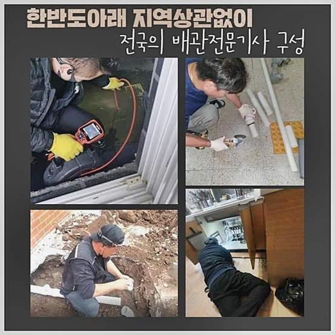
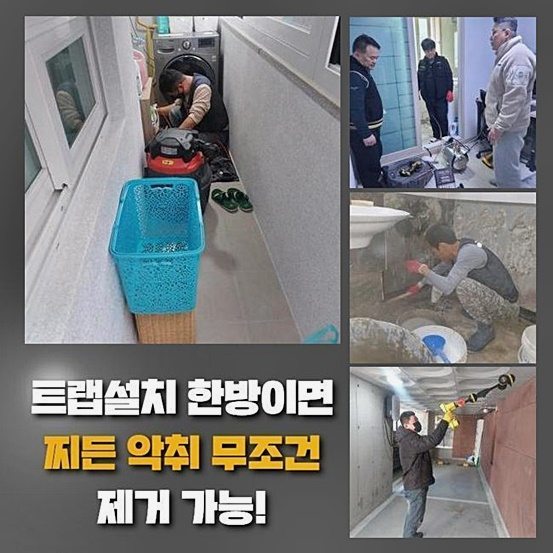
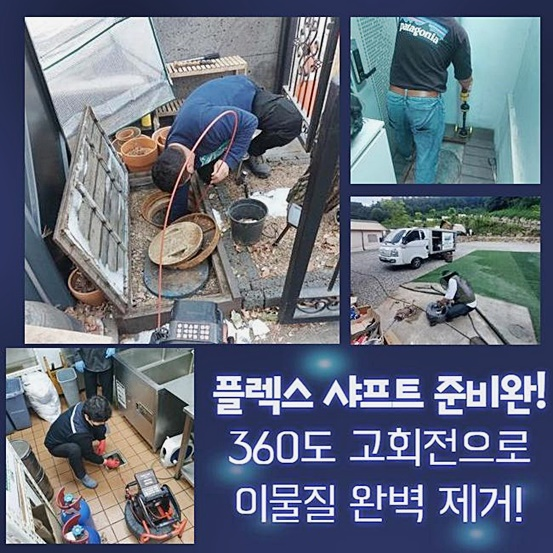
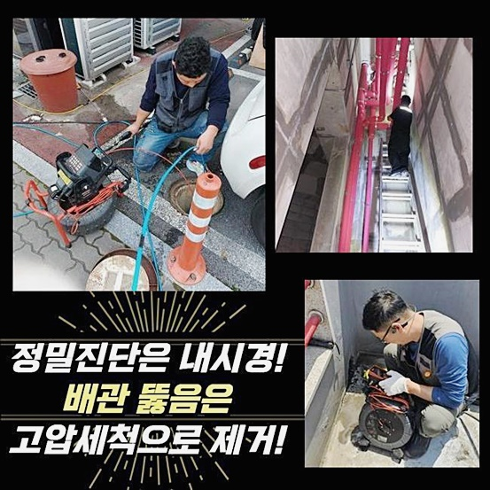
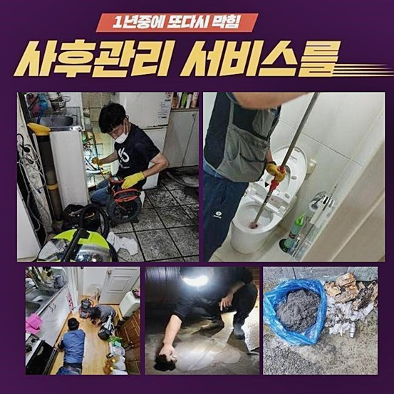
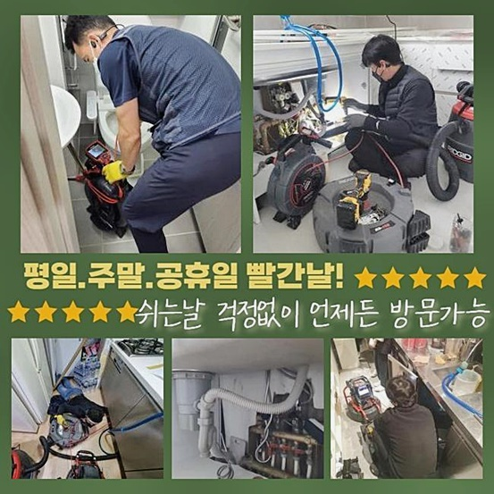

🏠 관악구 낙성대동씽크대막힘 미성동 오수맨홀청소 설비하는곳
용인시 처인구 배관막힘 전문 시공 후기

📋 작업 개요
- 위치: 용인시 처인구, 수원시 영통구, 화성시 동탄
- 서비스 유형: 배관막힘, 고압세척
- 작업 일시:
- 업체명: 하수구수사대 (010-5615-2118)
🔍 문제 상황
관악구 낙성대동씽크대막힘 미성동 오수맨홀청소 설비하는곳
배관부근에 정체현상 등이 나타났다면 재빠르게 반응하여 수습하는 게 완결성을 높이는 방안이라고 할 수 있겠으나 내팽개쳐버리다 생활에 심각한 불편이 나타났을 시 서둘러 방문을 요청하시는 고객분들이 대다수라고 말씀드릴 수 있겠습니다
금일은 우리팀이 시공한 고객님의 댁을 기초로 하여 배관의 문제들은 어떤 수단이 요구되며 이것들을 소멸하기 위하여 무슨 수단으로 시공을 해야 마땅한지 안내해 드리는 시간이 되었으면 합니다
금번에 알려드릴 위치는 평균적인 아파트로 고객님은 몇 달 전부터 물흐름이 눈에 띠게 느려졌다는 것을 발견했으나 조금 시간이 흐르면 쉬이 없어질거라 생각해서 별다른 조치없이 방관하셨다고 하네요
허나 몇 주도 지나지 않아서 역류까지 나타났으며 점차적으로 문제가 위급해지는 상황을 목격하고 신속하게 저희에게 의뢰하신 경우였어요
우리들이 물을 쓸 때 나타나는 갖가지 찌꺼기들이 배수관으로 침범하게 되는데요
배관파이프는 수도공급을 진행하는 설비로서 하나의 지점으로 제작된 모양새가 대다수인데 한 곳의 집에서 방출되는 슬러지들이 한 군데로 집중된다면 최종적으로 파이프 차단으로 연결되는 것이죠
그렇기 때문에 빌라와 같은 공동시설물은 본인에게 일어난 사태가 다른 곳으로 다다를 수 있단 사안을 망각하면 안됩니다

🔎 원인 분석
💡 전문가 진단: 정밀 진단 장비를 사용하여 슬러지의 고착 여부를 판명하고 타격/세척 작업을 실시했습니다.
배관 안으로 투입된 잔재들은 물과 섞이지 않는 성향이 있기 때문에 한 개의 덩어리로 변모하며 몸집을 늘려나가는 것이 일반적입니다
이것이 반복되는 경우에 관 속을 점차 메워서 역류의 까닭이 된답니다
그리고 외부 처리장까지 도달하지 못한 이물들이 주변의 요인들로 인해 물성이 변하면 주변으로 고약한 냄새가 올라오며 생활에 지장을 주는 겁니다
수돗물을 사용할 때 배관쪽으로 액상성분이 흘러나가는 스피드가 느리게 느껴지거나 까닭없는 오취가 나타나는 사태땐 하수관에 기름때 등이 누가되었을 확률이 높으니 배관기술자들을 찾아서 정체가 생긴 이유를 조속하게 간파해 줄 필요가 있어요
우리들은 순차적으로 배관전용 카메라를 비롯한 배수 시스템을 알아보는 일을 실시합니다
관 안은 협착하고 기다란 모습으로 생산되어졌기에 맨눈으로 사태를 알아내기는 힘겨우므로 카메라설비를 집어넣어서 물막힘이 발현된 자리를 분명히 알아낼 필요가 있어요
배관전용 카메라와 체결된 모니터 화면을 통해서 다양한 측면에서 살펴보니 주 파이프와 같은 후미진 데를 비롯하여 크고 작은 찌꺼기들이 뭉텅이가 되어서 경직되었다는 사실을 목도하게 되었어요
긴 작업 범위를 대상으로 시공을 속행하게 될 때엔 샤프트기기와 같은 파쇄용품을 사용해서 특정 부위에 쌓인 잔재 청소 업무를 진행한 이후 고압세정 기구를 가동하여 전반적인 소제를 감당해 나가는 편이 옳은 길이라고 설명드립니다

🔧 작업 과정
평소 생활중 예사로이 맞닥뜨릴 수 있는 파이프 정체문제를 방지하려면 제때 유지보수를 진행하는 것이 올바르다고 말할 수 있겠지만 때마다 전문업체를 찾아 나서야 하는 데에 거부감이 생길 수 있죠
그렇지만 물막힘이나 역류가 일어났을 때에 고가의 장비를 사용하여 해결하는 것보단 정례적인 소제 관리를 이용해서 배관을 정결하게 유지하는 방법이 자질구레한 금전을 절약하는 부분으로 되돌아온다는 걸 기억하시는 것이 마땅하다고 안내합니다
부적격한 대응은 반대로 사태를 안좋은 쪽으로 변모하게 할 수 있는 부분을 마음속에 간직해 둘 것을 부탁하겠습니다
군데군데 생긴 정체 현상을 해소해 내려고 샤프트기기를 삽입하여 단단해진 찌꺼기 일체를 파괴시켜 나갔고 벽면에 스크래치가 일어나지 않게 조심스레 가동을 이어나간 뒤 확인해보니 고인 액상이 소멸되는 것을 직시할 수가 있었어요
그후에 노즐을 배수관으로 투입하여 전체적인 소제 시공을 이행하였는데요
여러 세대가 모여있는 건축물은 파이프를 함께 이용할 수 있게 구성되었기에 엄청난 규모의 이물들이 일시에 유출될 수 있어서 적절한 보전물품을 써서 주위를 꼼꼼하게 보양한 다음에 세정을 이행하는 활동이 필요합니다
게다가 배관의 위치나 개별적 특성을 파악 못 하고서 부적절하게 힘을 주는 일이 발발하면 부속품의 균열이 생길 가망성이 높아요
작업중에 발생가능한 무요한 사안들을 방지하려면 건축물의 구조가 나와 있는 서류를 확인해 본 후 전반적인 구조와 성격을 알아내는 게 기본적인 것이라고 안내할 수 있겠습니다
저흰 숙련된 기본기를 활용하여 해당되는 사안을 온전히 이행해낼 수 있기 때문에 다채로운 가변 요소를 생각하고 신중한 태도로 뚫음을 실시하고 있으니 마음 놓으셔도 무방합니다
장시간 소쇄가 실행되지 못했던 지점이라서 세척 기계가 움직이는 순간마다 상당량의 이물이 쏟아져 내려오는 걸 목도하게 되었어요
분출된 쓰레기들을 소상히 관측하니 부패증세가 시작된 심중한 상황이라는 걸 알게 되었죠
혹시 여기에서 공사가 안 되고 지체되었더라면 악화일로로 치달았을 게 분명하였죠
훌륭한 능력을 지닌 저희 기술팀이 세밀하게 맡은바 일을 실행하니 배수문제와 오취를 발생시킨 찌꺼기들을 남김없이 없애드릴 수 있었어요


✅ 작업 완료
막힘이 발생하게 되면 미미하게 물이 천천히 내려간다 정도로만 인식되겠지만 점차 시간이 흘러갈수록 역한 냄새가 나오는 등의 복잡한 트러블을 대할 가망이 크죠
그렇기 때문에 조금이라도 말썽의 낌새를 채신 상태시라면 되도록 즉각적으로 처리하는 게 여러 측면에서 좋을 것입니다
급작스레 일어난 트러블을 신속하게 처리해낼 수 있는 사람을 알아보고 있으시다면 능숙한 기술력을 동반한 우리와 같이 가보시는 걸 바랍니다
오랜 현장 증험을 기초로 하여 배관의 모습을 정확하게 파악해 경제적인 부분에도 신경을 써서 해결해 나가는 방도를 제의해 드릴 걸 약조해드릴 터이니 시공이 요망되신다면 늦은 시간이라도 연락해 주시길 바라요



⚠️ 하수구 배관 막힘 예방 및 관리 가이드
- ✅ 머리카락, 비닐, 물티슈 등 물에 분해되지 않는 이물질은 절대 흘려보내지 마세요.
- ✅ 기름기 많은 식기는 설거지 전 키친타올로 먼저 기름때를 닦아내세요.
- ✅ 주기적으로 배수구에 뜨거운 물을 가득 부어주어 유지방 고착을 방지하세요.
- ✅ 작업 후 1년 이내 재발 시 무상 A/S 보증 서비스를 제공합니다.
💡 핵심 정리
- 확실한 장비 작업(내시경 점검 및 샤프트 스케일링)으로 원인을 뿌리 뽑습니다.
- 작업 후 1년 이내에 동일한 부위 재발 시 100% 무상 A/S 서비스를 보장합니다.
- 서울 · 경기 · 인천 전 지역에 24시간 언제든 긴급 출동할 수 있도록 항시 대기 중입니다.
❓ 자주 묻는 질문 (FAQ)
🚨 용인시 처인구 배관막힘 문제로 고민이신가요?
정확한 원인 진단과 확실한 시공으로 재발 없는 해결을 약속드립니다.
24시간 긴급 출동 | 서울 · 경기 · 인천 전지역 | 1년 내 재발 시 무상 A/S